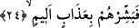

yalan saymak ise küfrün şiddetinden ve yüz çevirmeye sevk eden inkârın gücünden
kaynaklanır.
23. Halbuki Allah onların gizlediği şeyleri çok iyi bilir.
“Halbuki Allah onların” kalplerinde “gizlediklerini çok iyi bilir.” Onların
göğüslerinde biriktirdikleri küfrü, hasedi, azgınlığı, kini çok iyi bilir. Bilir de bütün
bunlara dünyada ve âhirette karşılığını verir.
Âyetteki “ma” mevsule yâni iyelik zamiridir. “Yû‘ûn” kelimesi “ev‘aytu’ş-şey’e/bir
şeyi bir kabın içine koydum” kökünden gelmekte olup, “herhangi bir şeyi bir kaba
koymak, yerleştirmek” anlamınadır. Daha sonra kelime istiâre yapılarak “kalpte
gizlenenler” anlamına kullanılır olmuştur. Aynı kökten türeme “el-va‘y” korumak
anlamındadır.
Âyeti şöyle anlamak da mümkündür: Halbuki Allah onların amel defterlerinde
toplamış oldukları kötü amellerini ve kendi nefisleri için biriktirmiş oldukları çeşit
çeşit azapları fiilî ve tafsilî bir ilimle bilir.
Kâşâni bu âyetten şu işâretleri çıkarır: Halbuki Allah onların nefis kabları ve
içlerinde biriktirdikleri fasid itikadlarını ve fâsık hey’etlerini bilir.
Necmuddin’in et-Te’vilatu’n-Necmiyye’sinde ifâde edildiğine göre âyetin mânâsı
şöyledir; Halbuki Allah onların dünyevi şehvet denizine dalmalarını ve uhrevi azap
ateşinde yakılmalarını bilir.
24. (Rasûlüm!) Onlara acı azabı müjdele!
“Onlara” o kâfirlere “acı azabı müjdele!” Onlara son derece elem verici, acılığının
zirvesine çıkmış azabı müjdele. Çünkü Allah’ın yukarda zikredildiği şekilde vermiş
olduğu bilgi, sana onların kesinlikle hangi günahtan dolayı azap edileceğini gösteriyor.
Onların azap edilmelerine sebeb olacak fiilleri ise mü’minleri alaya almaları ve onların
ardından maskaralık yapmalarıdır. Nitekim Allah başka bir âyette şöyle buyuruyor:
“Gerçekte, Allah onlarla istihza (alay) eder de azgınlıklarında onlara fırsat verir.
Bu yüzden onlar bir müddet başıboş dolaşırlar.” (Bakara 2/15) Müjdeleme ifâdesi
aslında insana sevinç veren haberlerin bildirilmesinde kullanılır. Fakat bazen insana
üzüntü verecek haberlerin bildirilmesinde kullanıldığı da olur.
Bu âyet-i kerimede aynı zamanda mü’minlere cismânî ve ruhânî rahat verecek sevabın